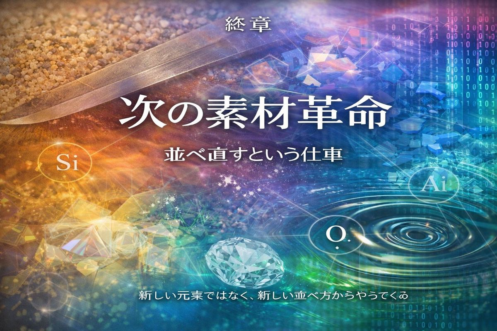
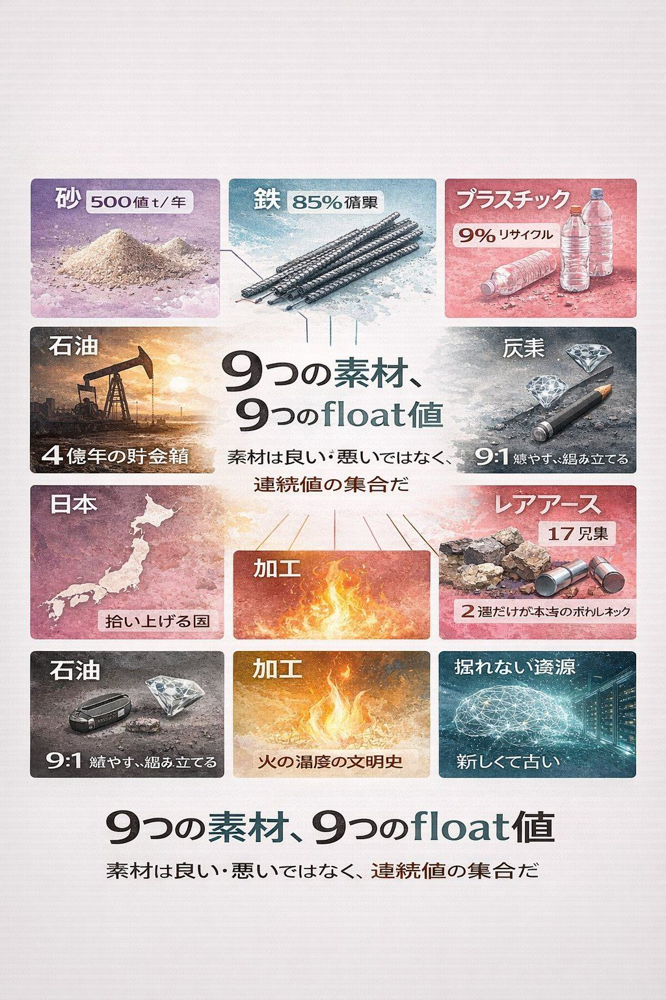
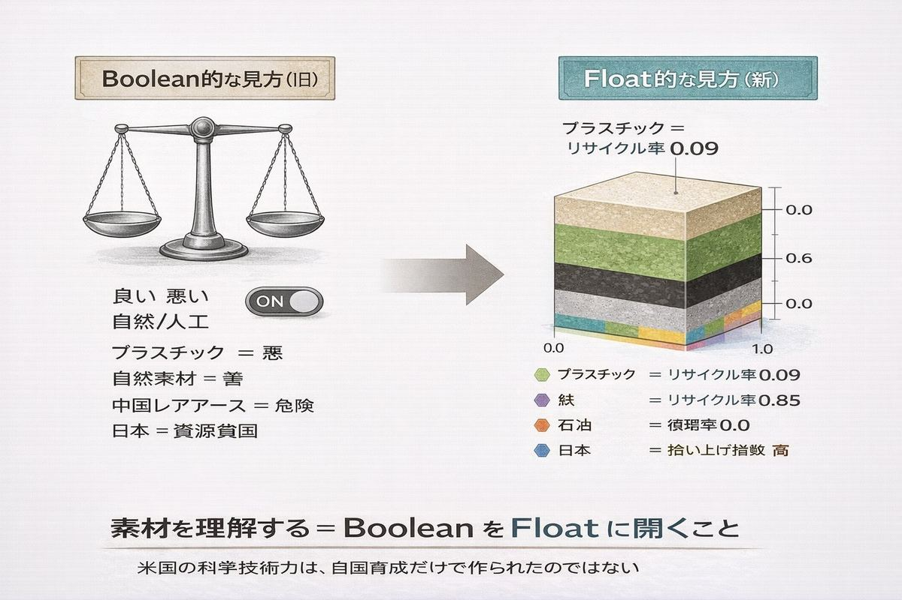
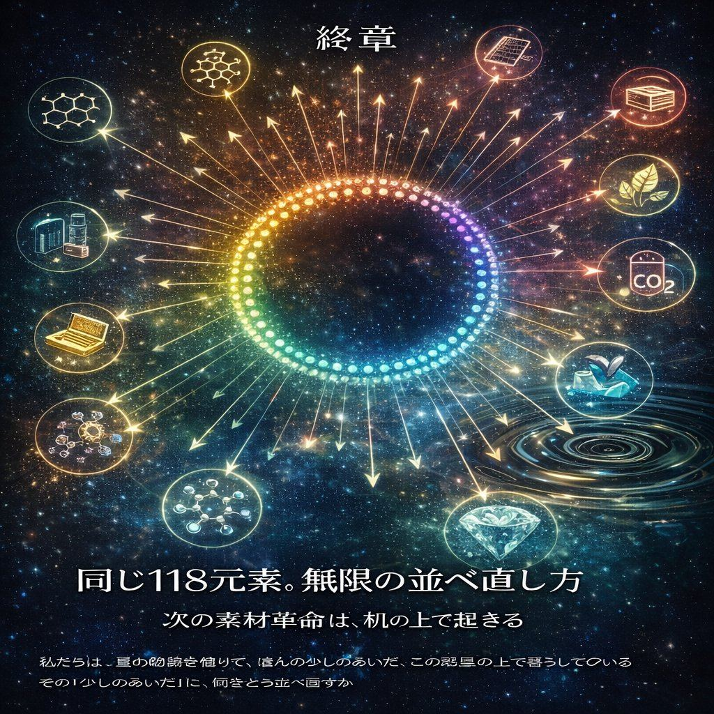

過去は未来の予告編だ。 ── 出典不明（しかし振り返れば必ずそう思える）
ここまで、9つの素材の物語を見てきた。砂、鉄、プラスチック、石油、炭素、レアアース、日本、加工史、掘れない資源。

それぞれの章で違う数字と違う歴史を扱ったが、最後に並べてみると、すべてが同じ問いに収斂する。
「素材」とは、何か？
物理化学の教科書なら、こう答える。「特定の組成と構造を持った物質」。完璧な定義だ。間違っていない。しかし、本書を通じて見えてきたものは、もう少し違う。
砂と半導体は、同じSiO₂だ。鉛筆とダイヤモンドは、同じ炭素だ。鉄と鋼は、ほぼ同じ鉄原子だ。レアアース17兄弟は、化学的にほぼ区別がつかない。
つまり、素材を素材たらしめているのは、「何でできているか」ではない。「どう並べられているか」だ。
そして「どう並べられているか」を決めるのは、温度、圧力、時間、純度、そしてそれを操る人間の技術スタックの厚みだ。素材とは、化学組成ではなく、加工の歴史の凝集である。
これが、本書を貫く最初の答えだ。
もう一つの答えは、もっと実践的なものだ。

私たちは普段、素材を「良いもの」と「悪いもの」に分けがちだ。プラスチックは悪い、再エネは良い、コンクリートは無味乾燥、自然素材は素晴らしい、レアアースは中国の支配下、シェール革命はゲームチェンジャー。
二分法は分かりやすい。しかし、本書で見てきた事実はすべて、二分法を裏切っていた。
すべての素材は、Yes/Noで判定するものではなく、いくつかの連続値（float）の組み合わせとして理解するべきものだ。
リサイクル率。エネルギー指数。地政学集中度。時間スケールのミスマッチ。生命との接続度。代替可能性。これらの数字を並べると、素材は「良い・悪い」ではなく、「こういう特徴を持っている」という多次元の点として描ける。
素材を理解するとは、Boolean を Float に開くことだ。
これが、本書が暗黙のうちに繰り返してきたメッセージだ。
未来予測は本書の役目ではない。しかし、本書が示してきた視点で見ると、「次の素材革命」がどんな形になるかは、ある程度推測できる。
それは、新しい元素の発見ではない。
人類はすでに地球上にある118種類の元素をすべて発見し、いくつかは人工的にも作っている。新しい元素が見つかる可能性はあるが、それは超重元素であり、寿命が短すぎて素材としては使えない。
新しい鉱床の発見でもない。
海底鉱床、宇宙鉱物、小惑星採掘──これらは確かに新しいフロンティアだが、本質的には「掘る」という古い動詞の延長だ。第9章で見たように、「マイニング」は10万年前から続いている動詞の一つにすぎない。
では、何か。
新しい並べ方の発見だ。
グラフェンは、すでに知っている炭素を1原子層に整列させただけで生まれた。ペロブスカイト太陽電池は、ありふれた元素を新しい結晶構造に組んだだけで効率を上げた。固体電池は、リチウムを別の材料の中で「並べ直す」だけで安全性を上げた。CO₂回収技術は、空気中に拡散した炭素を別の形に「組み立て直す」試みだ。バイオプラスチックは、植物が太陽光で組み立てた炭素を、人類が編み直して使う技術だ。
すべて、「並べ直し」だ。
過去1万年の文明が「火の温度を上げて元素を取り出す」物語だったなら、次の1万年は「取り出した元素をどう並べ直すか」の物語になる。場所はもう、地下ではなく、机の上にある。
第9章で見た「掘れない資源」── データ、電力、半導体、研究者、影響力 ── は、新しい資源のように見えて、古い資源の構造を再演している。動詞は同じ。場所は同じ。違うのは目的語だけ。
しかし、もしかすると、その一番の解決策も「並べ直し」にあるのかもしれない。
データを掘って独占する代わりに、データを循環させる。電力を奪い合う代わりに、地域分散で並べ直す。チップを一極集中させる代わりに、複数のサプライチェーンに並べ直す。研究者を引き抜く代わりに、国際協力のネットワークで並べ直す。フォロワー数を奪い合う代わりに、コミュニティの多様性として並べ直す。
「掘る・運ぶ・使う・独占する」の4つの動詞ではなく、もう一つ、新しい動詞を加えること。
「並べ直す」。
これは、本書の第8章で「文明とは元素を並べ直す技術の集大成」と書いた延長線上にある。物理的な素材だけでなく、社会的な資源も、「並べ直す」対象として扱えるはずだ。
簡単ではない。すべての歴史は逆方向に動いてきた。集中、独占、戦争、奪い合い。並べ直すことの難しさは、人間社会の重力そのものだ。
それでも、本書を通じて見てきたとおり、人類は素材についてはこの「並べ直し」をすでに何千年も続けてきた。砂を半導体に変えた。鉄を鋼に変えた。炭素をグラフェンに変えた。日本は廃品を都市鉱山に変えた。
物理ができたなら、社会もできるかもしれない。
第1章の冒頭に置いた歌を、もう一度引きたい。
頬につたふ涙のごはず一握の砂を示しし人を忘れず
啄木の手のひらにあったのは、涙と、ただの砂だった。
100年経って、私たちは知っている。その砂が、500億トンの王者であること。世界中で奪い合いになっていること。建物の骨格でも、ガラス瓶の原料でも、半導体チップの始祖でもあること。同じSiO₂が、純度を9桁上げるとAIになること。
啄木の歌の美しさは、データを知ることで損なわれただろうか？
私はそう思わない。むしろ、増した。
一握の砂のなかに、文明のすべての可能性が宿っていることを知ったうえで読むあの歌は、100年前より深く響く。手のひらの上の小さな粒は、宇宙の始まりから星の核合成を経て、地球で風化し、川で角を作り、人類が掘り出して、ビルになり、瓶になり、チップになって、もう一度誰かの手のひらに戻ってくる。
長い旅をしているのは、砂だけではない。鉄も、炭素も、レアアースも、すべての素材が、宇宙の始まりから今までの長い旅をして、いまあなたの部屋にいる。
そして、その旅は、まだ終わっていない。
最後に、本書のメッセージを3行にまとめる。

世界は思っているのと違う素材でできている。
素材は良い・悪いではなく、連続値の集合だ。
次の素材革命は、新しい元素ではなく、新しい並べ方からやってくる。
この3つを胸に置いて、もう一度あなたの部屋を見回してみてほしい。
スマホ、椅子、壁、床、窓、カップ、ペン、本──そのすべてが、長い旅をしてここに辿り着いた星の物質だ。あなたもまた、星の物質でできている。
私たちは、星の物質を借りて、ほんの少しのあいだ、この惑星の上で暮らしている。
その「少しのあいだ」に、何をどう並べ直すか。
それが、あなたと、私と、人類すべてに残された仕事だ。
そして、その仕事は、まだ始まったばかりだ。
【インタラクティブ図鑑で見る】 本書のすべてのデータは、図鑑で対話的に探索できます： 🔗 https://osakenpiro.github.io/materials-of-civilization/
著者あとがき（簡略版）
この本は、あるTwitterの会話から始まった。「人類は一番何を使っているんだろう」。素朴な疑問に答えを探して、気づいたら9章分のデータと物語が集まっていた。
専門外の領域に足を踏み入れる勇気をくれたのは、Hans Roslingの『FACTFULNESS』だ。データと物語を組み合わせれば、専門書の堅牢さも、新書の軽やかさも、両方を超えた何かが書けるかもしれない。本書がその試みのひとつとして読まれたら嬉しい。
執筆にあたっては、多くのデータをUSGS、UNEP、WRI、NIMS、IEAなどの公開統計から取得した。すべての数字には誤差があり、すべての解釈には別の見方がある。本書は決定版ではなく、議論の出発点として書かれている。
2026年春 東京にて osakenpiro
全章リスト
| 章 | タイトル |
|---|---|
| 序章 | あなたの部屋は何でできているか |
| 第1章 | 砂 ── 最強にして最も過小評価された王者 |
| 第2章 | 鉄 ── 熱いうちに |
| 第3章 | プラスチック ── 化石燃料はプラスチックの夢を見るか |
| 第4章 | 石油 ── 動かない血液 |
| 第5章 | 炭素 ── 鉛筆と指輪のあいだ |
| 第6章 | レアアース ── 17兄弟、分けられない |
| 第7章 | 日本 ── 拾い上げる |
| 第8章 | 加工 ── 火の温度の文明史 |
| 第9章 | 掘れない資源 ── ものすごく新しくてありえないほど古い |
| 終章 | 次の素材革命 |